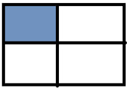
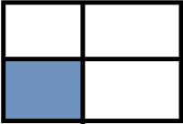
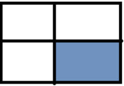

Знайти суми елементів у вказаній області
- 

- 
- 
-
Суму парних рядків
-
Суму непарних стовпців
-
У парних рядках – непарні стовпці, у непарних – парні.
Знайти суми елементів у вказаній області
Суму парних рядків
Суму непарних стовпців
У парних рядках – непарні стовпці, у непарних – парні.
Дано інформацію про прибуток К магазинів протягом тижня. Знайти :
загальний прибуток кожного масиву за тиждень;
загальний прибуток усіх магазинів по дням (загальний прибуток усіх магазинів за понеділок, за вівторок, і т.д.);
загальний прибуток за робочі дні
загальний прибуток за вихідні дні
максимальний прибуток за середу
сформувати загальний список (одновимірний масив) зі значенням, які що більші за 200
відсортувати кожен тиждень за зростанням
відсортувати тижні (рядки) за спаданням максимального елементи у цьому тижні (рядку), тобто при порівнянні рядків потрібно порівнювати максимальні елементи у кожному з цих рядків
упорядкувати тижні (рядки) за спаданням суми елементів у рядку (тобто при порівнянні двох рядків треба знайти суму кожного з рядків і порівнювати ці суми, на основі цих сум буде зрозуміло, який з елементів повинен іти раніше).
Морський бій. Випадковим чином на двовимірному полі розміром 6*6 розташовується 5 кораблів. Користувач стріляє вказуючи координати. Гра продовжується поки не потоплено усі кораблі або у користувача не закінчаться снаряди.